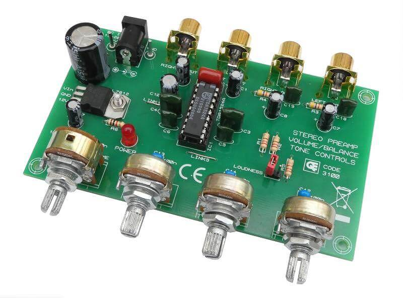
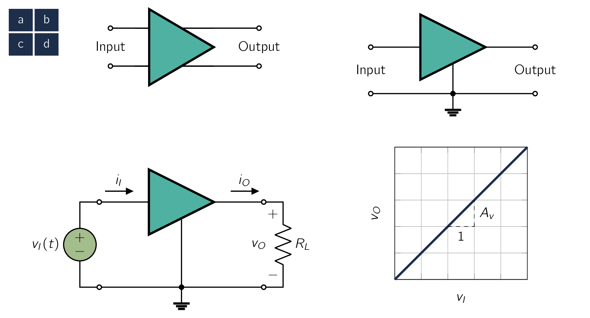
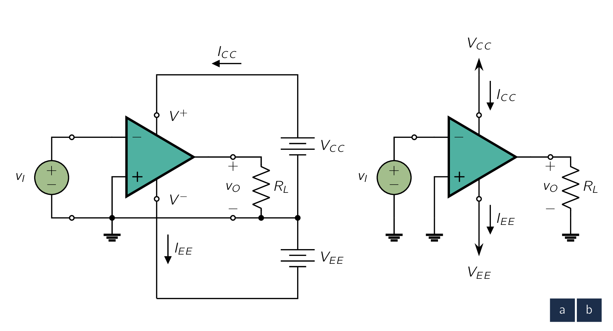
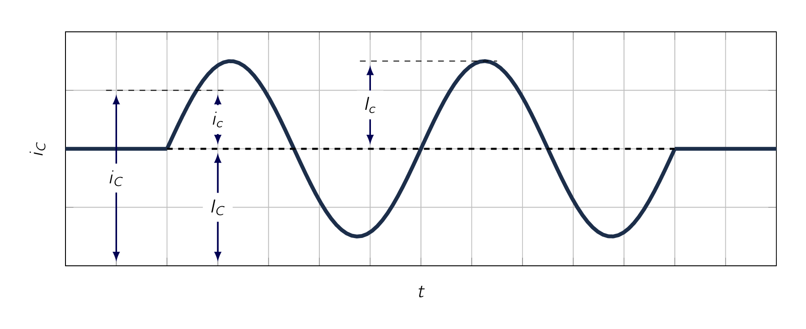

In this section, we will look at the most fundamental signal-processing function, one that is implemented in some shape or form in almost every electronic system, namely, signal amplification. We will study the amplifier as a circuit building block. That is, we will consider its external characteristics for now and focus on operational amplifiers in Operational Amplifiers.
From a conceptual point of view the simplest signal-processing task is signal amplification. The need for amplification is required as transducers provide signals that are said to be “weak”, that is, in the microvolt () or millivolt () range and possessing minuscule energy. Such signals are too small for reliable processing, and processing is much easier if the signal magnitude is made larger. The functional block that accomplishes this task is the signal amplifier.
It is useful at this point to discuss the need for linearity in amplifiers. Special care needs to be taken in the amplification of a signal, so the information contained in the signal is not changed and no new information is introduced. Therefore when we feed the signal shown in Fig. 1.3 to an amplifier, we want to make sure the output signal of the amplifier to be an exact replica of the input, except of course for having larger magnitude.
In other words, the “wiggles” in the output waveform needs to be identical to those in the input waveform. Any change in waveform is considered to be distortion and is obviously undesirable.
An amplifier which preserves the details of the signal waveform is characterised by the relationship:
| (1.4) |
where and are the input and output signals, respectively, and is a constant representing the magnitude of amplification, known as amplifier gain.
As can be seen, Eq. (1.4) is of a linear relationship, therefore the amplifier it describes is a linear amplifier. It should be trivial to reason that if the relationship between and contains higher powers of , then the waveform of will no longer be identical to that of .
The amplifier is then said to exhibit non-linear distortion.
The amplifiers we have discussed up to now are primarily intended to operate on very small
input signals. Their primary purpose is to make the signal magnitude larger, and therefore
they are thought of as voltage amplifiers. [14] 
At this time we wish to mention another type of amplifier, namely, the power amplifier.
Such an amplifier may provide only a modest amount of voltage gain but substantial current gain. Therefore, while absorbing little power from the input signal source to which it is connected, often a pre-amplifier, it delivers large amounts of power to its load.
Here we should be observant that the loudspeaker is the output transducer of the stereo system; it converts the electric output signal of the system into an acoustic signal. A further appreciation of the need for linearity can be acquired by reflecting on the power amplifier. A linear power amplifier causes both soft and loud music passages to be reproduced without distortion.

The signal amplifier is obviously a two-port circuit. Its function is conveniently represented by the circuit symbol of Fig. 1.7a. This symbol clearly distinguishes the input and output ports and indicates the direction of signal flow.
Therefore, in subsequent diagrams it will NOT be necessary to label the two (2) ports as input and output. For generality we have shown the amplifier to have two input terminals that are distinct from the two output terminals. A more common situation is illustrated in Fig. 1.7b, where a common terminal exists between the input and output ports of the amplifier. This common terminal is used as a reference point and is called the circuit ground.
A linear amplifier accepts an input signal and provides at the output, across a load resistance as shown in Fig. 1.7c, an output signal that is a magnified replica of . The voltage gain of the amplifier is therefore defined by:
| (1.5) |
Fig. 1.7d shows the transfer characteristic of a linear amplifier. If we apply to the input of this amplifier a sinusoidal voltage of amplitude , we obtain at the output a sinusoid of amplitude .
An amplifier increases the signal power. This is an important feature that distinguishes an amplifier from a transformer.
In the case of a transformer, while the voltage delivered to the load could be greater than the voltage feeding the input side, called the primary, the power delivered to the load [15] from the secondary side of the transformer. is less than or at most equal to the power supplied by the signal source.
On the other hand, an amplifier provides the load with power greater than that obtained from the signal source. That is, amplifiers have power gain.
The power gain of the amplifier in Fig. 1.7c is defined as:
| (1.6) |
where is the current that the amplifier delivers to the load , , and is the current the amplifier draws from the signal source. The current gain of the amplifier is defined as
| (1.7) |
From Eq. (1.5) to Eq. (1.7) we note that:
| (1.8) |
The amplifier gains defined previously are ratios of similarly dimensioned quantities. Therefore they will be expressed either as dimensionless numbers or, for emphasis,
-
as V/V for the voltage gain,
-
A/A for the current gain, and
-
W/W for the power gain.
Alternatively, for a number of reasons, some of them historic, electronics engineers express amplifier gain with a logarithmic measure. Specifically the voltage gain can be expressed as:
and the current gain can be expressed as:
Since power is related to voltage (or current) squared, the power gain can be expressed in decibels as:
The absolute values of the voltage and current gains are used because in some cases or will be a negative number.
A negative gain simply means that there is a phase difference between input and output signals. It does NOT imply that the amplifier is attenuating the signal.
On the other hand, an amplifier whose voltage gain is, say, - is in fact attenuating the input signal by a factor of 10 (i.e., V/V).
Given the power delivered to the load is greater than the power drawn from the signal source, and important question to ask here is:
The answer is found by observing that amplifiers need DCDirect CurrentOne-directional flow of electric charge. Direct current may flow through a conductor such as a wire, but can also flow through semiconductors, insulators, or even through a vacuum as in electron or ion beams. The electric current flows in a constant direction, distinguishing it from alternating current (AC). A term formerly used for this type of current was galvanic current. power supplies for their operation. These DCDirect CurrentOne-directional flow of electric charge. Direct current may flow through a conductor such as a wire, but can also flow through semiconductors, insulators, or even through a vacuum as in electron or ion beams. The electric current flows in a constant direction, distinguishing it from alternating current (AC). A term formerly used for this type of current was galvanic current. sources supply the extra power delivered to the load as well as any power that might be dissipated in the internal circuit of the amplifier. [16] such power is converted to heat. In Fig. 1.7c we have not explicitly shown these DCDirect CurrentOne-directional flow of electric charge. Direct current may flow through a conductor such as a wire, but can also flow through semiconductors, insulators, or even through a vacuum as in electron or ion beams. The electric current flows in a constant direction, distinguishing it from alternating current (AC). A term formerly used for this type of current was galvanic current. sources.

Fig. 1.8a shows an amplifier which requires two (2) DCDirect CurrentOne-directional flow of electric charge. Direct current may flow through a conductor such as a wire, but can also flow through semiconductors, insulators, or even through a vacuum as in electron or ion beams. The electric current flows in a constant direction, distinguishing it from alternating current (AC). A term formerly used for this type of current was galvanic current. sources:
- 1.
- one positive of value , and
- 2.
- one negative of value .
The amplifier has two terminals, labeled and , for connection to the DCDirect CurrentOne-directional flow of electric charge. Direct current may flow through a conductor such as a wire, but can also flow through semiconductors, insulators, or even through a vacuum as in electron or ion beams. The electric current flows in a constant direction, distinguishing it from alternating current (AC). A term formerly used for this type of current was galvanic current. supplies. For the amplifier to operate, the terminal labeled has to be connected to the positive side of a DCDirect CurrentOne-directional flow of electric charge. Direct current may flow through a conductor such as a wire, but can also flow through semiconductors, insulators, or even through a vacuum as in electron or ion beams. The electric current flows in a constant direction, distinguishing it from alternating current (AC). A term formerly used for this type of current was galvanic current. source whose voltage is and whose negative side is connected to the circuit ground. Also, the terminal labeled has to be connected to the negative side of a DCDirect CurrentOne-directional flow of electric charge. Direct current may flow through a conductor such as a wire, but can also flow through semiconductors, insulators, or even through a vacuum as in electron or ion beams. The electric current flows in a constant direction, distinguishing it from alternating current (AC). A term formerly used for this type of current was galvanic current. source whose voltage is and whose positive side is connected to the circuit ground. Now, if the current drawn from the positive supply is denoted and that from the negative supply is , shown in Fig. 1.8a, then the DCDirect CurrentOne-directional flow of electric charge. Direct current may flow through a conductor such as a wire, but can also flow through semiconductors, insulators, or even through a vacuum as in electron or ion beams. The electric current flows in a constant direction, distinguishing it from alternating current (AC). A term formerly used for this type of current was galvanic current. power delivered to the amplifier is
If the power dissipated in the amplifier circuit is denoted as , the power-balance equation for the amplifier can be written as
where is the power drawn from the signal source and is the power delivered to the load. Given the power drawn from the signal source is usually small, the amplifier power efficiency is defined as
| (1.9) |
The power efficiency is an important performance parameter for amplifiers that handle large amounts of power.
Such amplifiers, called power amplifiers, are used, for example, as output amplifiers of stereo systems.
to simplify circuit diagrams, we will adopt the convention illustrated in Fig. 1.8b. Here the terminal is shown connected to an arrowhead pointing upward and the terminal to an arrowhead pointing downward. The corresponding voltage is indicated next to each arrowhead.
In many cases we will NOT explicitly show the connections of the amplifier to the DCDirect CurrentOne-directional flow of electric charge. Direct current may flow through a conductor such as a wire, but can also flow through semiconductors, insulators, or even through a vacuum as in electron or ion beams. The electric current flows in a constant direction, distinguishing it from alternating current (AC). A term formerly used for this type of current was galvanic current. power sources and that some amplifiers require only one power supply.
Consider an amplifier operating from power supplies. It is fed with a sinusoidal voltage having peak and delivers a sinusoidal voltage output of peak to a load. The amplifier draws a current of from each of its two power supplies. The input current of the amplifier is found to be sinusoidal with peak.
Find the voltage gain, the current gain, the power gain, the power drawn from the DCDirect CurrentOne-directional flow of electric charge. Direct current may flow through a conductor such as a wire, but can also flow through semiconductors, insulators, or even through a vacuum as in electron or ion beams. The electric current flows in a constant direction, distinguishing it from alternating current (AC). A term formerly used for this type of current was galvanic current. supplies, the power dissipated in the amplifier, and the amplifier efficiency.
which can be written as:
or
and finally
From the above example we observe that the amplifier converts some of the DCDirect CurrentOne-directional flow of electric charge. Direct current may flow through a conductor such as a wire, but can also flow through semiconductors, insulators, or even through a vacuum as in electron or ion beams. The electric current flows in a constant direction, distinguishing it from alternating current (AC). A term formerly used for this type of current was galvanic current. power it draws from the power supplies to signal power that it delivers to the load.
From a practical point-of-view, the amplifier transfer characteristic remains linear over only a limited range of input and output voltages. For an amplifier operated from two power supplies the output voltage cannot exceed a specified positive limit and cannot decrease below a specified negative limit.
The resulting transfer characteristic is shown in Fig. 1.14, with the positive and negative saturation levels denoted and , respectively. Each of the two saturation levels is usually within a fraction of a volt of the voltage of the corresponding power supply.
Obviously, to avoid distorting the output signal waveform, the input signal swing must be kept within the linear range of operation,
In Fig. 1.14, which shows two input waveforms and the corresponding output waveforms, the peaks of the larger waveform have been clipped off because of amplifier saturation.
At this point, it is important we set up some standard terminology we shall use throughout the lecture which a diagram is given in Fig. 1.9.

To begin, a current () consists of a DCDirect CurrentOne-directional flow of electric charge. Direct current may flow through a conductor such as a wire, but can also flow through semiconductors, insulators, or even through a vacuum as in electron or ion beams. The electric current flows in a constant direction, distinguishing it from alternating current (AC). A term formerly used for this type of current was galvanic current. component on which is superimposed a sinusoidal component (i.e., ACAlternating CurrentAn electric current that periodically reverses direction and changes its magnitude continuously with time, in contrast to direct current (DC), which flows only in one direction.) whose peak amplitude is . Please observe that at a time , the total instantaneous current is the sum of the DCDirect CurrentOne-directional flow of electric charge. Direct current may flow through a conductor such as a wire, but can also flow through semiconductors, insulators, or even through a vacuum as in electron or ion beams. The electric current flows in a constant direction, distinguishing it from alternating current (AC). A term formerly used for this type of current was galvanic current. current and the signal current :
| (1.10) |
where the signal current is given by
Therefore, we state some conventions:
-
Total instantaneous quantities are denoted by a lowercase symbol with uppercase subscript(s), for example, , .
-
Direct-current (dc) quantities are denoted by an uppercase symbol with uppercase subscript(s), for example, , .
-
Incremental signal quantities are denoted by a lowercase symbol with lowercase subscript(s), for example, , .
-
If the signal is a sine wave, then its amplitude is denoted by an uppercase symbol with lowercase subscript(s), for example, , .
-
DCDirect CurrentOne-directional flow of electric charge. Direct current may flow through a conductor such as a wire, but can also flow through semiconductors, insulators, or even through a vacuum as in electron or ion beams. The electric current flows in a constant direction, distinguishing it from alternating current (AC). A term formerly used for this type of current was galvanic current. power supplies are denoted by an uppercase letter with a double-letter uppercase subscript, for example, , . A similar notation is used for the DCDirect CurrentOne-directional flow of electric charge. Direct current may flow through a conductor such as a wire, but can also flow through semiconductors, insulators, or even through a vacuum as in electron or ion beams. The electric current flows in a constant direction, distinguishing it from alternating current (AC). A term formerly used for this type of current was galvanic current. current drawn from the power supply, for example, .
-
¶
- ACAlternating Current
An electric current that periodically reverses direction and changes its magnitude continuously with time, in contrast to direct current (DC), which flows only in one direction.
-
¶
- DCDirect Current
One-directional flow of electric charge. Direct current may flow through a conductor such as a wire, but can also flow through semiconductors, insulators, or even through a vacuum as in electron or ion beams. The electric current flows in a constant direction, distinguishing it from alternating current (AC). A term formerly used for this type of current was galvanic current.